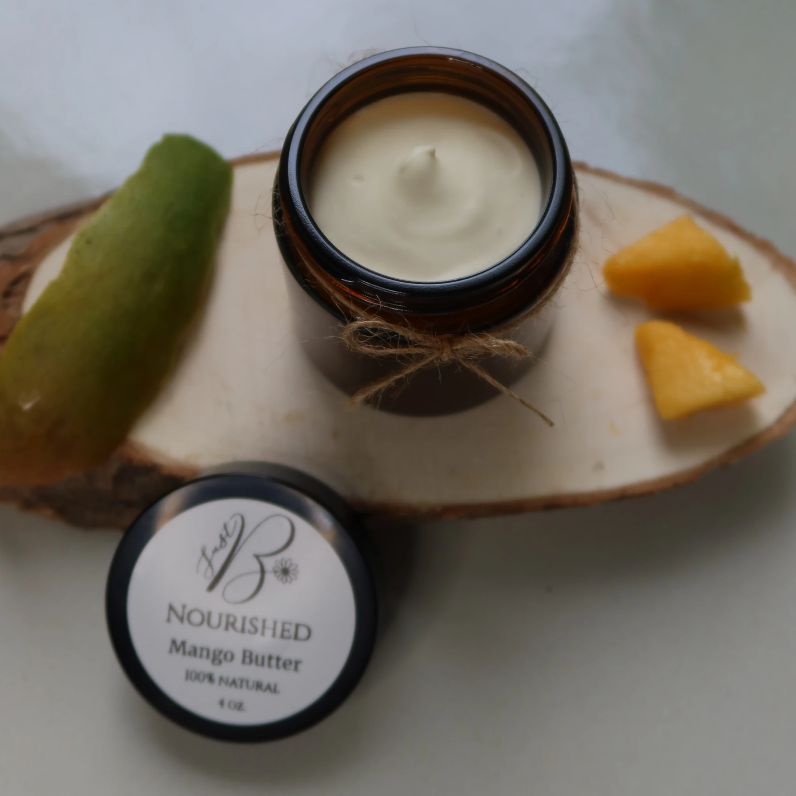

Handcrafted in Gatineau, Québec
Mango Butter

A rich, water-free body butter formulated with nutrient-rich plant butters and oils to deeply moisturize, soften, and condition dry skin.
Ingredients
Raw Mango Butter, Unrefined Shea Butter, Organic Jojoba Oil, Organic Rosehip Oil, Arrowroot Powder, Steam-Distilled Essential Oils (Lavender, Cedarwood), Vitamin E, Madagascar Vanilla Bean.
Browse all products